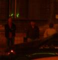

Megkezdõdött a Bombagyár buli a B City Pubban. Máris vagyunk vagy
harmincan, plusz két
barátságos kidobó (olyan rohamrendõr-hajigáló
fajták), és jó kis káosz, mert a tulaj nem
vette komolyan, hogy mi itt százan leszünk, és csak
egy-két asztalt tartott fenn nekünk. Most
magyaráztam a pultos csajoknak, hogy pedig mi
ezt kurvára komolyan gondoltuk. Kis vita volt
arról is, hogy hogyan oldjuk meg, hogy csak a
mi bulink résztvevõitõl szedjünk 500
forintos beugrót, az egyébként betévedõktõl
pedig ne... – egyébként mi a különbség a kétféle
vendég között? Ész, hová mész. Szóval
semmi sincs rendben, de legalább pia lesz elég,
azt látom a bárpulton. Itt vagyunk már vagy
húszan, a stábból Blogin, Fõnix, Greed és
Gabucino, meg én. Ja, és most jött meg Dia,
Fõnix barátnõje. Az, a zsidóverõ.
Egy kedves gyárlakó
hozott nekem svájci katonai csokit. Le is
fényképeztük, de pont most hülye a Gyár, nem tudom
feltölteni. Gabucino meg itt fekszik
félrészegen, úgyhogy nem tudja fixelni. Szóval
képzeljetek el egy csokit piros csomagolásban,
fehér kereszttel, és az is rá van írva, hogy
Militär-Schokolade.
Nem tudom megkóstolni, mert elszállna a cukrom, de
majd kiosztjuk díjnak a
darts-versenyben.
18.44 blogin
Megkaptam az elsõ ajándék söröm.
Még ígért valaki, majd behajtom. Én is
kaptam svájci csokit. Közben kiderült, hogy a
dartshoz nincsen tû, de nem baj, nem
szeretem a dartsot. Csak így kinek adjuk az ajándékokat,
amelyeket hoztunk? Mindegy, talán lesz
csocsóbajnokság is (a csocsót is utálom). A kidobók még
mindig nagyon nagyok.
18.56 blogin
Az egyik csapos lány, Barbi
éppen azt nézi, hogy mit írok. Alapvetõen semmit.
Dragon64 még nem érkezett meg. Egy másik csapos lány
nem szeret minket túlságosan. Egy civil srácot
kínunkban beengedtünk, mert úgy megszokta a
játékgépezést, hogy hiányzott neki. Közben én
már egyszer kiöntöttem, egyszer pedig eleve magamra
öntöttem a piát. Mindenki jó arc.
19.04 blogin
Még kétszer
kiöntöttem a sört, amelyet szintén ajándékba
kaptam. A búzasört itt sokan szeretik, azt viszont
nem, aki a napokban azt állította, hogy megivott két
nap alatt 140 fröccsöt, ezt nem hisszük el neki.
Megérkezett Gyilkosgalóca is. Aki nincs itt, annak
rossz. Lehet, hogy a napokban meg is hal
emiatt.
19.16 blogin
Dragon mindjárt érkezik, de a vonat
vonalán valamiféle karambol volt (reméljük, hogy sokan
meghaltak, szörnyû halállal). A vécé kulturált;
ilyen helyeken én mindig tartok egy kissé ettõl a
helyiségtõl. Tudni kell, hogy elég kellemetlen,
amikor egy talponállóban elmész a piszoárhoz, majd a melletted
levõ távolba révedõ tekintettel rád néz, aztán az
addig másra használt kezét feléd nyújtja: te tényleg
a Blogin vagy?! Itt ilyen nincs.
19:30 tomcat
Lassan annyian vagyunk, mint egy
átlagos antifasiszta nagygyûlésen. Valaki épp most szólt be
Bloginnak, hogy úgyis az asztal alá issza. Blogin
pedig lebaszta Gabucinót, hogy nem fog rendesen berúgni, ha
csak sört iszik. Gabucino Xenophobe-t mutat neki az
MP3 lejátszóból. Blogin ideges, mert egy haverja nem
jött el, pedig megígérte. Aki hazudik, azt megöljünk.
Gabucino és Gergõ (korábban terrorista, de
megszüntették az eljárást) Lovecraftot tárgyalják ki. Bent, a
belsõ teremben körbetolt asztaloknál részegednek a
mocskos horthysták. Durva.
19.32 blogin
„Rendezvényre?” –
kérdezik a legjobb kidobók.
„Gyilkosgalóca” – válaszolja
megilletõdve Gyilkosgalóca. „Az valami titkos jelszó?”
Tény, nem mondtunk el mindent elég részletesen. De
a buli csodálatos, épp most lépett ide hozzám valaki:
„Köszönöm, hogy megcsináltátok ezt a bulit, a
legjobb, amin valaha voltam.” Bár ez nyilvánvaló túlzás, azért
mégis jó érzés, hogy bárkivel szóba állhatsz,
itt biztosan mindenki a barátod. (Kaptam még
innivalót.)
19.38 blogin
Megérkezett Dragon64, tapsot kapott. Csak tudnám,
miért. (Szerencsére õ sem tud inni, ahogyan Tomcat sem,
engem tehát többen hívnak meg ;))
19.40 tomcat
Annyira
megörültem Dragonnak, hogy mindjárt belekaroltam, hogy a
nagy terembe vezessem. A mozdulat során könyököm találkozott Gabucino
poharával, amibõl éppen ivott, így pofánsöröztem.
Gabucino most csöpög és anyáz.
Egy kedves olvasónk,
zebraman kérdezte itt a
kommentekben, miért jó az embereknek, hogy berúgnak. Nos, erre nem tudom
a választ, mert én nem iszom. Blogin válasza az volt erre,
hogy kuss, de õ már elég
részeg. Megkérdeztem hát a csapos csajokat, hogy nekik
mi a véleményük a kérdésrõl. Az egyik azt mondta, azért jó nekik
berúgni, mert akkor be lesznek rúgva. A másik kicsit
gondolkodott, majd beismerte, hogy nem tudja. Pedig neki értenie
kellene hozzá.
Épp most jöttek meg a Náczivadász szerkesztõi. Hurrá.
Meg Number is. Szia, Number.
A harmadik pultos csaj
megkérdezte, mivel foglalkozunk. Mondtam, hogy
terroristák vagyunk, amit tudomásul vett, és nem kérdezte meg se
azt, hogy viccelek-e, se azt, hogy miért. Aztán elárultuk, hogy
újságírók vagyunk, és ezek itt az olvasóink. Meg hogy van
egy polóboltom. Mire a hölgy éleslátóan
megjegyezte:
– Aha, szóval ti sok mindennel foglalkoztok,
akkor ti ilyen politikusok vagytok!
Na, ez jól meg
lett állapítva. Üdvözlet.
19.59 blogin
A legrészegebbre, Slayerre rábíztam
a csocsóbajnokság szervezését (fontos megjegyezni: utálom a
csocsót). Elvileg 22-en jelentkeztek, de még meglátjuk. Jelenleg a
nyeremények elosztása is nehéz feladatnak tûnik, pedig el sem kezdõdött
még a verseny.
20.06 tomcat
Dragon ma 44 éves. Ezt a számot
nyugodtan írhatjuk úgy, hogy éves. Ugye, róla is kiderült
végül. Greeddel nagyon utálunk csocsózni, ezért csapatot
alakítottunk. Mi vagyunk a Dupla Nigger nevû
csapat.
20.31 blogin
Tomcat épp most csocsózik („Polgár Tamás, Dupla
Nigger, jöjjön” – szólították). Kaptam még
innivalót, közben pedig láttam egy fiút (Daveyt) leánnyal
csókolózni. (Winnetou jó fej. Igen.) Bevallom: ittam.
20.36 blogin
A Dupla
Niggert elpicsázták 3:9-re. Mert szarok. Juhhé!
20.50 blogin
Roadin kérte, hogy
viccbõl tiltsam ki. Kiderült, hogy érvénytelen adatokat adott
meg a regisztrációnál, úgyhogy örökre kitiltottuk. Éljen!
21.00 fõnix
Beszélgetés közben Slayer táskájából elõkerült egy
húszcentis tõr. Azt nem mondta el mire használja. Csakúgy mint Wolverine,
aki egy kalapácsot hord az övében. Végüli s stílusosabb mint egy boxer.
Egyébként jó a buli, sok embernek örültem (Mázlista, Wolverine, Werrwolf,
Kagami). Meg a többieknek is, csak õket nem ismerem nickrõl. Hiába, 4600
regisztrált tagot már igen nehéz nyilvántartani. Na megyek vissza
gyûlöletbeszélni.
21.07 blogin
A csocsóverseny
gyõztese Crowley és Gyula, akik egyébként ittak is rendesen, mivel a buli elsõ
érkezõi voltak (van ennek értelme magyarul?). Van már két talajrészeg srác,
akiken csúnyán sírósra röhögjük magunkat. Azon röhögnek, hogy másokat hogy
oltok, pedig õket oltom igazán.
23:11 tomcat
Na, ez is megvolt.
Kijött a BRFK megerõsített rohamjárõre, saját bevallásuk szerint 30 fõ
egyenruhással és a nyakukban a Nemzeti Nyomozó Iroda plecsnijét viselõ
nyomozókkal. Parancsnokuk történetesen pont az a fószer volt, aki
Csepelrõl elvitt tavaly. Bezúdultak a B Citybe, mindenkit felállítottak,
igazoltattak, lenyomoztak. Állításuk szerint ez "rutinellenõrzés", és
ilyet minden nap csinálnak. No persze, teljesen normális, hogy annyi
rendõrautó álljon meg egy kocsma elõtt, ami egy jobb népfelkelés leveréséhez
is elég. És igen, ez az NNI feladata. Az egyik egyenruhás paraszt
azzal indított, hogy könyékkel beleütött Blogin sörösüvegébe, miközben
ivott, majd ártatlanul közölte, hogy véletlen volt. Aztán azt is, hogy
szájba fogja vágni, ha ugrál. A parancsnok világosította fel, hogy ezt most
nem kéne. A sorszáma 12389 volt. A "rutinellenõrzés" mintegy háromnegyed
órán át tartott, mert mindenkit egyenként ellenõrizni kellett,
körözött személyek után kutatva. Végül csak elmentek. Blogin, már kissé
nyomás alatt, de bátran kiosztotta õket, kitérve arra, hol is lenne
helye ennyi rendõrnek, mi lenne a dolguk, és kinek a szemét lövöldözzék ki. A
pékek kisebb hányada csúnyán nézett, viszont nagyobb hányadukon látszott,
hogy kicsit azért szégyelli magát. Kiváló fényképek készültek a
Zichy utcát ellepõ járõrkocsikról és
csapatszállítókról.
23:32 tomcat
A
rendõrök ugyan elmentek, de jött helyettük néhány érdekes pofa.
Beállított közénk egy zsidó nõ és két cigány férfi, kértek egy sört
(hárman egyet), és most bent üldögélnek, várva, hogy ki köt beléjük.
Szánalmas. Közben Roadin épp kilencedszer hány. Mekkora szar! Minek
iszik, ha nem bírja? Gabucino is tajtrészeg, de azért az imént
megfixelte a Novarán a MySQL hibákat. Mondjuk ez is egy kockaság,
kocsmaasztalnál szervert hackelni.
00.19 blogin
Utolsó
információm szerint Roadin tizedszer hányt. Azóta nincs meg. A sörrel
leöntött laptoptöltõ mûködik. Bovvert mindenki zaklatja, mert lány. A
kidobók épp elmennek.
00:35 blogin
Kagami nem normális.
Józanon sem, de akkor, amikor bejöttek a rendõrök, elborult az agya. Fölugrott,
hogy megveri a rendõröket, és kereste a nuncsakuját. Nem találta, a rendõrök
közben megszeppenten nézték. Állítása szerint úgyse értették. Engem
szerintem értettek, elég érdekes fejet vágtak, miután vázoltam nekik, hogy
kinek hol a helye.
01:11 tomcat
A kocsma elõtt, az utca túloldalán egy faszi ácsorog,
biciklivel. Biztos valami újfajta sport ez, biciklivel ácsorogni az utcán éjszaka.
Szemtanúk szerint a bent üldögélõ zsidó nõvel érkezett, elköszöntek, majd a nõ és a
két cigány bejöttek, õ meg ott maradt. Kisvártatva, történetesen pont akkor,
amikor öten-hatan voltunk az ajtó elõtt, felbukkant egy cigánysuhanc, odarohant a
biciklishez, és sûrû köcsögözés és árnyékbokszolás közepette fenyegetni kezdte,
hogy agyonveri. Teljesen abszurd jelenet, ráadásul a bringás szemrebbenés nélkül
állt tovább, mintha mi se lenne természetesebb, hogy a szeme elõtt egy cigány
ökle suhog. Amikor azonban látták, hogy mi nem avatkozunk közbe, tehát csak nem
lesz verekedés, a cigány balra, a bringás jobbra oldalgott el. Ki érti
ezt.
03:04 tomcat
Szerencsésen hazaértünk
Dragonnal. Most épp Athinával okoskodnak mindenféle gyógyteákról és
füvekrõl. Félútig, a Clark Ádám térig velünk tartott _Neo és orange_vs_reds.
_Neo egy korsó sört szorongatott, és különféle történelmi nótákat énekelt
üvöltve, némelyiknek helyben költve szöveget, illetve dallamot is spontán
rögtönözve. A Lánchídon találkoztunk egy szintén nem egészen józan társasággal,
akik legénybúcsút ünnepeltek. Nagyon megörültek nekünk, összevissza ölelgettük
egymást, végül _Neo leheveredett a Lánchíd úttestére a võlegénnyel, de ennek nem
homoerotikus vonzalom, hanem a gravitáció és az alkohol közös hatása volt az
oka. Remélem, a NNI-ben még most is virraszt néhány pöcsfej, és lelkesen próbálja
összerakni, miféle terrorcselekményre készült ma az a nagyjából hetven fiatal
szélsõséges. A kidobók – akik pedig nem ma kezdték a szakmát –
mondták, hogy ekkora razziát évek óta nem láttak. Olyan megesik, hogy egy-két
pék kijön körülnézni, de harminc paraszt még aratáshoz is sok.
Aki nem volt ott Dragon64 negyvennegyedik
születésnapján, sajnálhatja. Remek buli volt, mindenki jól berúgott, és ha nem
pofátlankodtak volna a rendõrök, még jobban éreztük volna magunkat. Elbúcsúztattuk
a nyarat. Rövidesen ismét jelentkezünk!
6.04 blogin
Jó reggelt,
indul ez a nap is! Este buli, de ilyen jó biztosan ilyen jó nem lesz. Sok remek
emberünk van!
12.14
gabucino
Kiváló, a filmszakadás után hajnalban egy taxiban tértem magamhoz,
cipóra vert bal arccal. Még mindig érzéketlen. Nem emlékszem, mi történt, azt hiszem
csöppet elájulhattam kint. Egész jó volt ez a buli, de ha valaki mégis összevert, az
értesítsen a történtekrõl, miértekrõl, biztosan érdekes.
Köszi.
15.31 tomcat
Jó reggelt. Gabu,
az arcoddal szerintem az történt, hogy hazaindultál biciklivel, és közben átszálltál
taxiba. Sajnálom a bringádat, jó kis gép volt... A kesztyûd és a két lámpád a B Cityben
maradt, mindjárt megyek oda és elhozom.
(Nem valószínû, egyrészt mert részegen is jól vezetek, másrészt meg a
fenti felszerelés nélkül nem mentem volna sehova. Ja, és már elmentem értük. Egyébként azt
eltaláltad, hogy a biciklim valóban nincs meg. Tehát aki rendelkezik információval arról, hogy
hogyan kerültem én egy taxiba, az ne tartsa magában. Egyébként a személyim sincs meg, gyanítom nem
kértem vissza a fakabátoktól. Nem volt unalmas a buli, ez elmondható. - G)
16.41 blogin
A
fokozott rendõri készültségnek az is oka lehetett egy informátorunk szerint, hogy pontosan a
kocsmával szembeni lépcsõházban lakik Hiller fiacskája. Talán azt hitték, megint valami
hasonló flash mobot szervezünk, mint Kóka villájánál (az egy másik nagy
Bombagyár-buli volt)...
a kusarigama egy sarlóhoz hasonló harci eszköz volt a nindzsáknál. a nyelére kötél volt erõsítve, a kötél másik végén pedig nehezék volt található. ezt rásuhintották az áldozatra, majd maguk felé rántva a pengét beleb*szták az illetõbe. félelmetes fegyver :)
A Kusari-gama az a szájdárda, vagy mi a szösz? Vagy azok ilyen pici nyílszerû bizbaszok? Ja, és képeket is szeretnénk. És türelmetlenfaszfejvagyok avatárt.
271. Borisz
2008-09-01 15:19:43
Ha tudom hogy fegyverrel kell jönni, akkor legközelebb hozok bokkent meg kotachit. Bár a kusarigama is kimagyarázható lenne, végülis a sarlópenge nem 10centi:D Aki érti, érti...
270. 270. Törölt felhasználó
2008-09-01 14:35:01
Privát üzenet Csak regisztrált felhasználók olvashatják el.